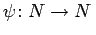

Inhalt Index DeskTop Bronstein

 Dynamische Systeme und Chaos Gewöhnliche Differentialgleichungen und Abbildungen Zeitdiskrete dynamische Systeme Topologische Konjugiertheit von diskreten Systemen
Dynamische Systeme und Chaos Gewöhnliche Differentialgleichungen und Abbildungen Zeitdiskrete dynamische Systeme Topologische Konjugiertheit von diskreten Systemen


Gegeben sei neben (17.3) ein weiteres diskretes System
mit , wobei  eine beliebige Menge und
eine beliebige Menge und  stetig ist (M und N können auch allgemein metrische Räume sein). Die diskreten Systeme (17.3) und (17.24) (bzw. die Abbildungen
stetig ist (M und N können auch allgemein metrische Räume sein). Die diskreten Systeme (17.3) und (17.24) (bzw. die Abbildungen  und
und  ) heißen topologisch konjugiert, wenn ein Homöomorphismus (konjugierender Homöomorphismus)
) heißen topologisch konjugiert, wenn ein Homöomorphismus (konjugierender Homöomorphismus)  existiert, so daß
existiert, so daß  ist. Sind (17.3) und (17.24) topologisch konjugiert, so überführt der konjugierende Homöomorphismus h die Orbits von (17.3) in Orbits von (17.24).
ist. Sind (17.3) und (17.24) topologisch konjugiert, so überführt der konjugierende Homöomorphismus h die Orbits von (17.3) in Orbits von (17.24).